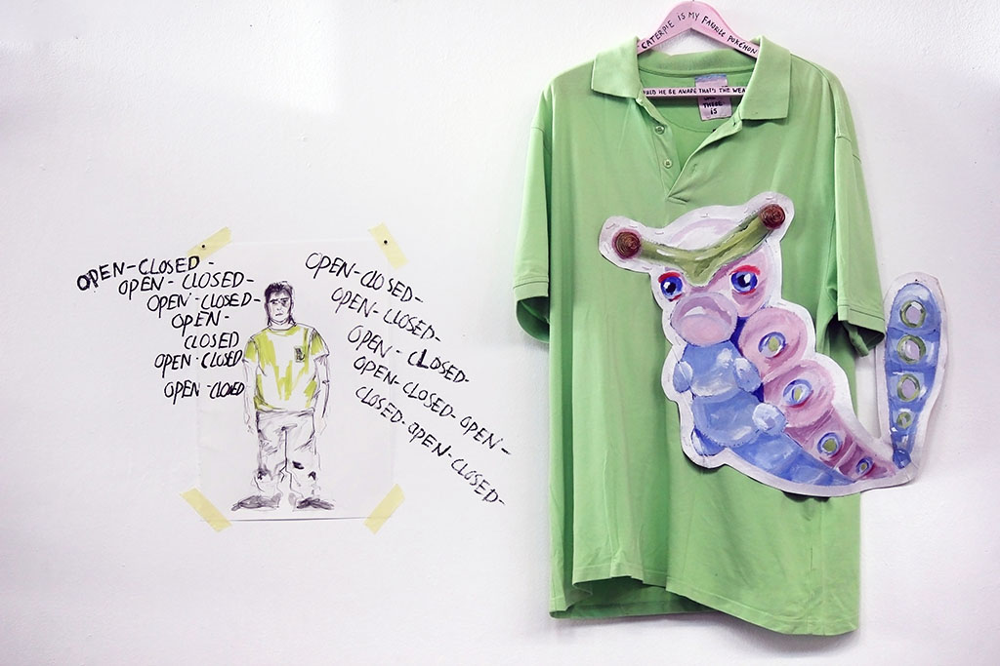
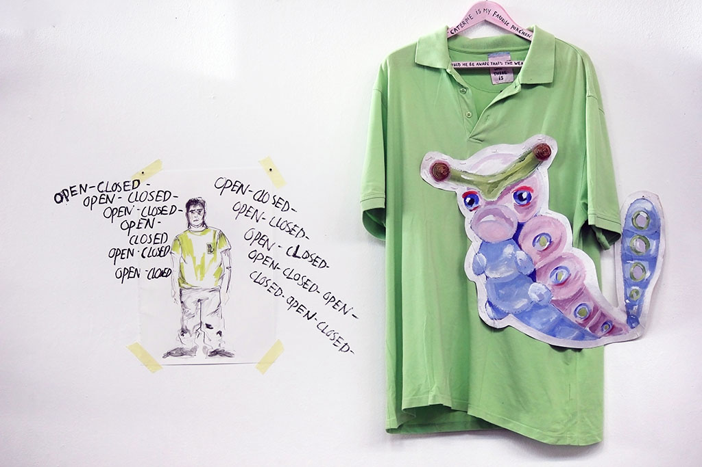
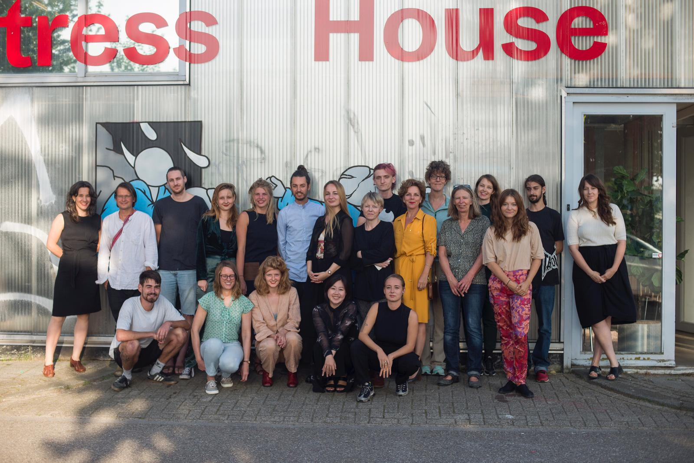
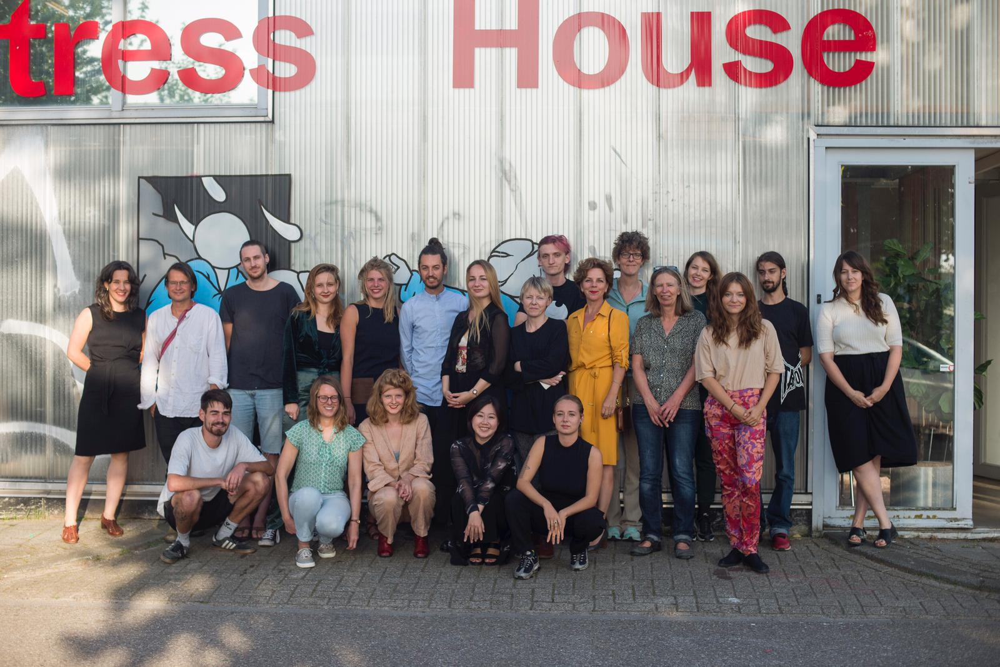

Privacy & Psychiatry
During the Summer School fourteen starting artists and a group of clients of HVO Querido worked on the subjects of privacy and mental health. As a focus point for their research they looked at the future: the year 2050. How private is our mental health in 2050?
Privacy is an important topic in the field of mental health as well as for our society in general.
What
do we share with others and what is private? Do we have control over our own data? And till what
extent
will social media and future technical devices influence our autonomy?
Can technology help reduce the taboo on psychiatric illnesses? Or will the growing amount of digital
data on our lives gain control over our most personal feelings?
MODEL 2050 shows the results of the artistic research and the collaboration between the artists of the Summer School and peer consultants and clients of HVO Querido. In the exhibition the participants share their dilemmas, utopian models and inspiring collaborations.
Participants: Petra ten Brinke, Aalt van de Glind, Hyo Min Gweon, Coen van Haaften, Renée van Hagen, Rachel Heemskerk, Rik de Heus, Sterre Herstel, Lucia Kooiman, Janneke Kornet, Heleen Kruijt, Julia Olaussen, Nina Pen, Lore Pilzecker, Saskia Scherpenzeel, Leonard Schmidt-Dominé, Hagar Schuringa
Credits
Curator: Esther Vossen
Coaches Summer School: Dirk van Lieshout, Marieke Zwart
Program Summer School: Dirk van Lieshout, Marieke Zwart, Esther Vossen
Coördination: Hélène Webers
Communication: Leonie van den Ende
Assistants: Suzanne Bernhardt, Reinier van Duijn, Beatrijs Rümke
Cook: Hendricus Sliep
Translation: Marienelle Andringa
Photography: Anastasia Alfonsina
Design: Nick Doejaaren, Nils Mork
Overall organization: Het Vijfde Seizoen
Guest lecturers: Annet Dekker (UVA), Leonie van den Ende, Galina (Fivoor) Wendie Hoenders (HVO Querido), Amparo González Sola, Ana María Gómez López, Anja Gramberg (Altrecht Ggz) Tamara Kuselman, Bart van der Loon (Fivoor), Manu Luksch, Floortje Scheepers (UMCU), Floris Schönfeld, Ronald Johnson (Rainbow Soulclub), Jesse Strikwerda, Wilco Tuinebreijer (Arkin), Eline Muller (Astare).
MODEL2050 | Privacy & Psychiatry in the Future is supported by AFK, Stichting Stokroos, HVO Querido
and
Altrecht GGZ.
Special thanks to Saskia Janssen and George Korsmit, Neef Louis Design and Kringloop de Lokatie.


 

 
